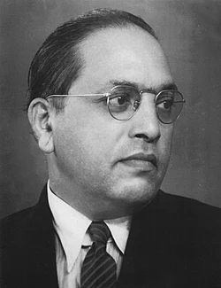
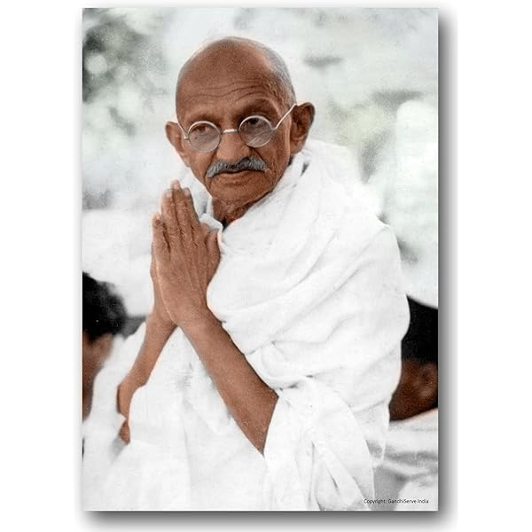
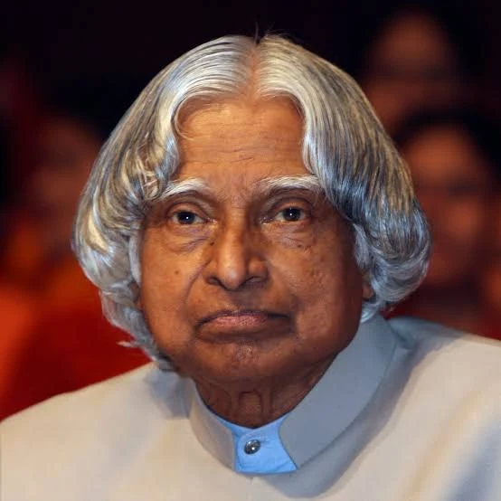

Bhimrao Ramji AmbedkarBhimrao Ramji Ambedkar Sakpal;14 April 1891 – 6 December 1956) was an Indian jurist, economist, social reformer and politician who chaired the committee that drafted the Constitution of India based on the debates of the Constituent Assembly of India and the first draft of Sir Benegal Narsing Rau. Ambedkar served as Law and Justice minister in the first cabinet of Jawaharlal Nehru. He later renounced Hinduism and converted to Buddhism, inspiring the Dalit Buddhist movement.

Mohandas Karamchand Gandhi
Mohandas Karamchand Gandhi[c] (2 October 1869 – 30 January 1948)[2] was an Indian lawyer, anti-colonial nationalist, and political thinker who employed nonviolent resistance to lead the successful campaign for India's independence from British rule. He inspired movements for civil rights and freedom across the world. The honorific Mahātmā (from Sanskrit, meaning great-souled, or venerable), first applied to him in South Africa in 1914, is used worldwide.

Avul Pakir Jainulabdeen Abdul KalamAvul Pakir Jainulabdeen Abdul Kalam (/ˈʌbdʊl kəˈlɑːm/ ⓘ UB-duul kə-LAHM; 15 October 1931 – 27 July 2015) was an Indian aerospace scientist and statesman who served as the president of India from 2002 to 2007. Born and raised in a Muslim family in Rameswaram, Tamil Nadu, Kalam studied physics and aerospace engineering.He spent the next four decades as a scientist and science administrator, mainly at the Defence Research and Development Organisation